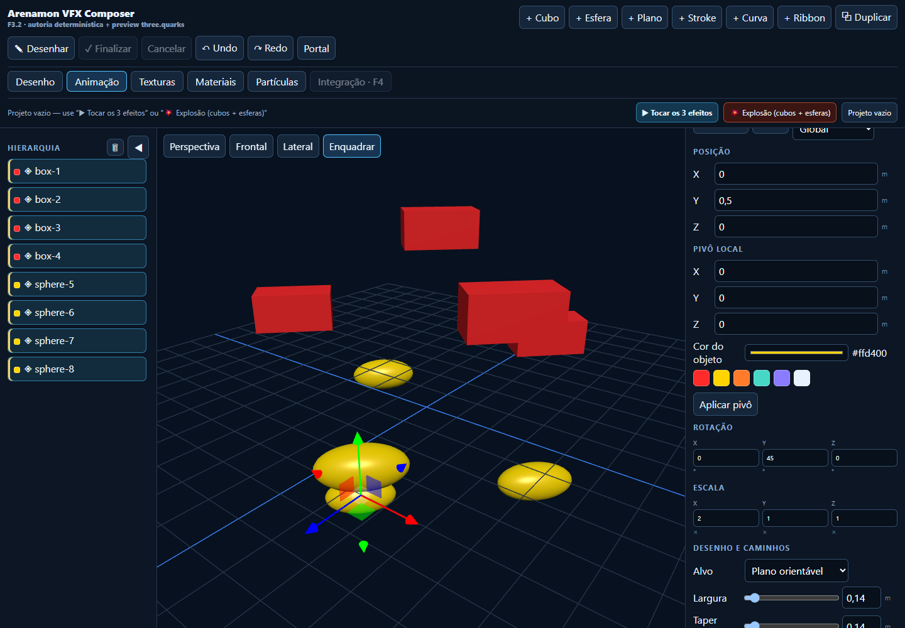
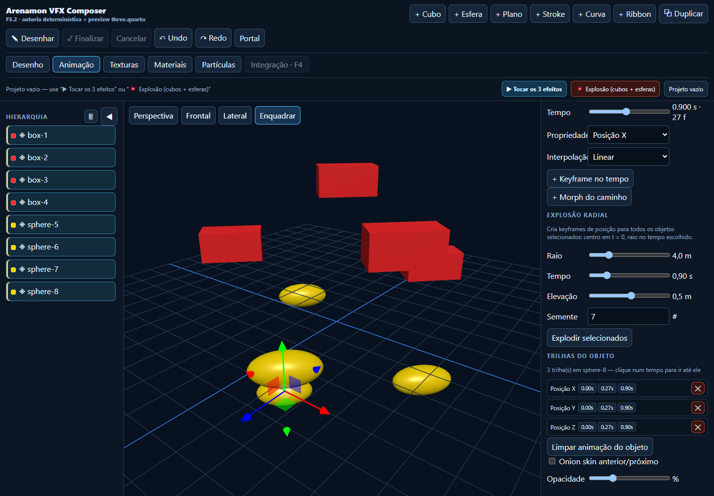
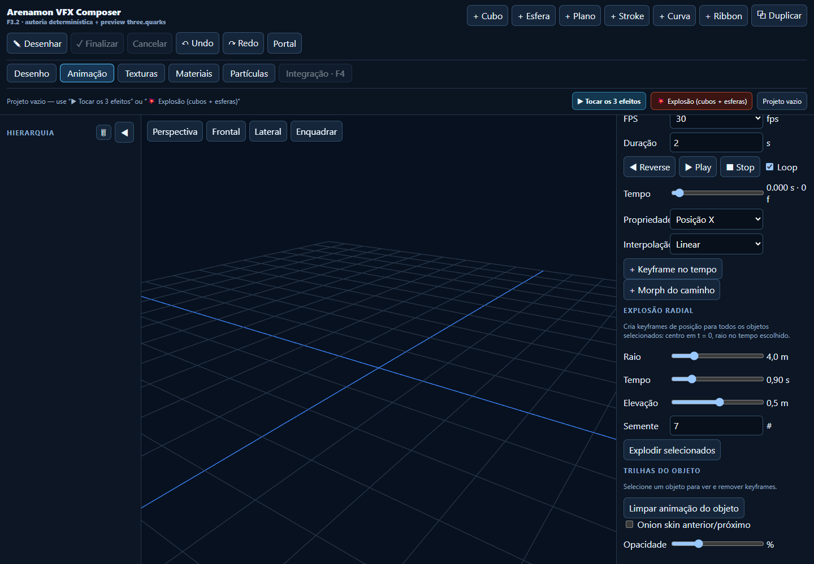

Explosão montada pela UI

8 objetos pintados pela paleta, seleção múltipla com Ctrl+clique e “Explodir selecionados” (raio 4,5 m em 1,1 s).
Explosão radial e trilhas

Raio em metros, tempo em segundos, elevação e semente. Cada trilha mostra os keyframes clicáveis e um botão para removê-la.
Projeto vazio

Projeto vazio agora limpa seleção, inspetor e lista de trilhas, sem deixar resíduo do projeto anterior.